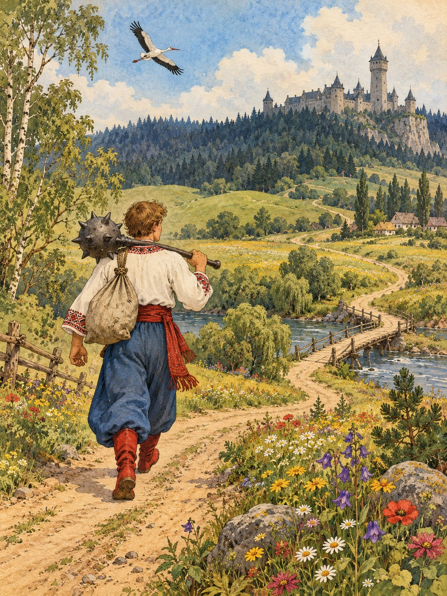

Узяв Котигорошко булаву на плече, попрощався з батьками й вирушив у дорогу. Ішов він полями й луками, переходив річки, пробирався крізь густі ліси.
Нарешті натрапив він на стару заросту борозну. Вона й привела його до сірого палацу. На подвір’ї блищав залізний тік, а біля вікна сиділа сумна дівчина.
— Хто ти, добрий молодцю? — спитала вона.
— Я твій брат, Котигорошко. Прийшов по тебе й по братів.
